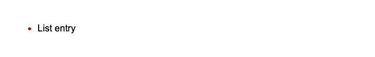
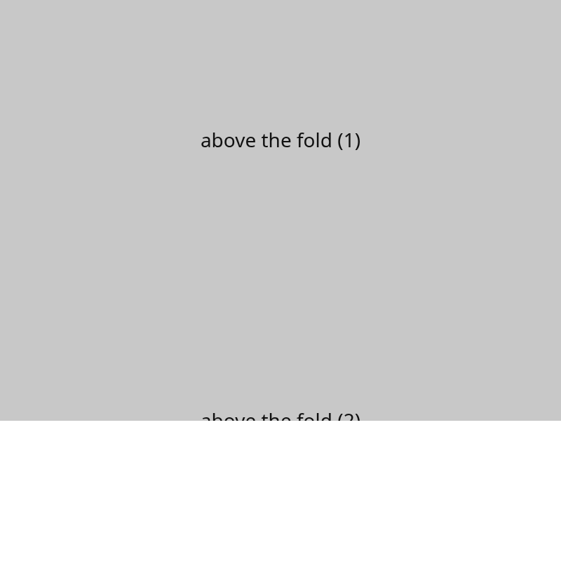
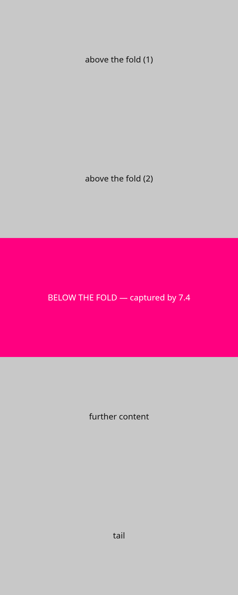

Crop compare spike
Real StyleProof crops already committed in this repository, laid out by an automatic crop-size rule. Decide NORTH_STAR open decision 1 (threshold) and open decision 2 (slider interaction). See README.md.
Threshold rule (automatic, crop-size based).
Narrow crop: span.content-label on home@900
Where is the change? (open after you have looked)
The small label on the right of the dark bar: its text changes fromOld to
New (and its colour). The demo report adds a 2× zoom because it is too small to read at 1:1.
Source: docs/demo/crops/home-900-content-2-composite.png (demo report composite, split at
runtime).
Hard to find: ::marker colour

Where is the change? (open after you have looked)
The list bullet left of “List entry”: a dot a few pixels wide changes from green to red. Nothing else moves.
Source: docs/proof/issue-447/full-v2-run-1/cases/computed-pseudo-marker-color-v2/ (#447
benchmark render proof).
Wide crop: the magenta band on board@800
Where is the change? (open after you have looked)
The whole band changes colour from blue to magenta.
Source: docs/proof/rect-inner-scroll/crops/board-800-1-composite.png (report composite, split
at runtime).
Full-page capture: inner-scroll shell at 800px


Where is the change? (open after you have looked)
The after capture is 2000px tall and paints the magenta “BELOW THE FOLD” band; the before capture stops at 800px (hatched area = no pixels on that side). This pair compares two capture paths, not a CSS edit, but both are real full-page screenshots, so it tests a tall slider honestly.Source: docs/proof/fullpage-inner-scroll/ (see its README).